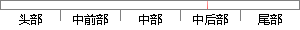

在GMM中求数据点由各个component生成的概率。
片段位置图

相似结果|
相似片段 1：：E—Step：假设模型参数已知的情况下求隐含变量z分别取Z1,z：，．．．的期望，亦即Z分别取Z1,z：，．．．的概率。在GMM中就是求数据点由各个高斯生成的概率。y(f，k)=ak·竹(气x
相似片段 2：基于概率统计的方法是求基聚类结果数据在统计上的特征，基聚类的权重与其置信度成正比。该方法是在基聚类结果的基础上用簇密度计算出数据点对间的距离，并生成H个component矩阵，然后对H个
相似片段 3：具体过程如下：现在假设有 N 个数据点服从 GMM 分布，现在要确定里面的一些参数。如果找到的一组参数，它所确定的概率分布函数生成这些给定的数据点的概率最大，则认为这是最佳的估计参数。而这个概率
相似片段 4：Component，单独地考虑从这个Componentl拘分布中选取一个点。高斯混合模型(GMM)聚类方法的具体实现：假定数据是由GMM生成出来的，那么我们只要根据数据推出GMM的概率分布就可以了，然后
相似片段 5：中得到的r(i，k)就是正确的“数据Xi由Componentk生成的概率”。集中考虑所有的数据点，现在实际上可以看作Component生成了y(1，尼)五，y(2，k)xz?，r(N，k)xⅣ这些点
|
※ 片段修改建议 ※
近似词参考：- 生成：天生
- 概率：几率
系统自动生成语句：在GMM中求数据点由各个component天生的几率。
注：本片段修改建议为系统自动生成，仅供参考。